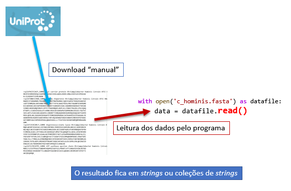
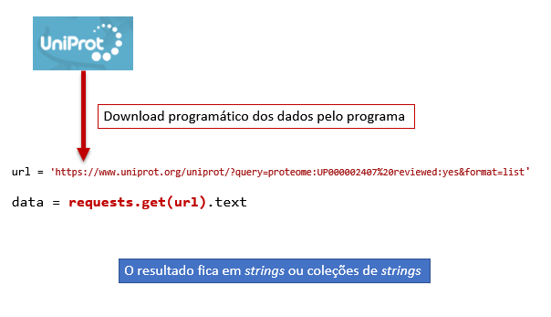
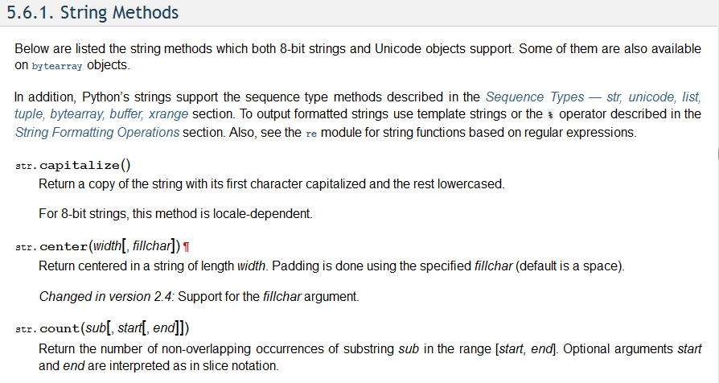

Strings e textos¶
Strings e textos estruturados¶
As strings e objetos coletivos que incluam strings são fundamentais nas aplicações da programação à análise de informação de natureza biológica e molecular. Isto porque essa informação é muitas vezes representável numa forma textual e, num programa, as strings são a maneira natural de represntar textos.
Os portais de bioinformática, por exemplo a UniProt oferecem, muitas vezes, a possibilidade de transferir a informação contida em bases de dados na forma de textos. Esses textos são estruturados, seguindo formatos e regras específicos.
Um exemplo é a representação de sequências de macromoléculas biológicas (ácidos nucleicos e proteínas) num formato designado por FASTA. Um pequena parte da informação sobre sequências do organismo Campylobacter hominis, obtido da UniProt, tem este aspeto:
>sp|A7HZZ5|ACP_CAMHC Acyl carrier protein OS=Campylobacter hominis (strain ATCC BAA-381 / LMG 19568 / NCTC 13146 / CH001A) OX=360107 GN=acpP PE=3 SV=1
MEVFEEVRDVVVEQLSVAPDAVKIDSKIIEDLGADSLDVVELVMALEEKFGIEIPDSEAE
KLISIKDVVTYIENLNKNK
>sp|A7I0W5|CH60_CAMHC 60 kDa chaperonin OS=Campylobacter hominis (strain ATCC BAA-381 / LMG 19568 / NCTC 13146 / CH001A) OX=360107 GN=groL PE=3 SV=1
MAKDIIFSDDARNRLYDGVKKLNDTVKVTMGPRGRNVLIQKSFGAPAITKDGVSVAKEVE
LKDTIENMGAALVKEVANKTNDQAGDGTTTATVLAHAIFKEGLRNITAGANPIEVKRGMD
KICADVVAELKKISKPVKDKKEIAQVATISANSDESIGKLIADAMEKVGKDGVITVEEAK
SINDELNVVEGMQFDRGYLSPYFITDAEKMQVELNSPLVLLFDKKITNLKDLLPVLEQVQ
KTGKPLLIIAEDIEGEALATLVVNKLRGVLNISAVKAPGFGDRRKAMLEDIAILTGGTVI
SEELGRTLESASIADLGKAERILIDKDNTTIVNGAGKKDDIKARVDQIKAQIAVTSSDYD
REKLQERLAKLSGGVAVIKVGAATETEMKEKKDRVDDALSATKAAVEEGIVIGGGAALIK
AGNAVKENLKGDEKIGADIVKRALFAPLRQIAENAGFDAGVIANAVSINKEKAYGFDAAC
GEFVNMFEAGIIDPVKVERVALQNAVSVASLLLTTEATVSEIKEDKPAMPQMPDMGGGMG
GMM
...
muitas outras sequências ...
...
>sp|A7I1M8|LGT_CAMHC Phosphatidylglycerol--prolipoprotein diacylglyceryl transferase OS=Campylobacter hominis (strain ATCC BAA-381 / LMG 19568 / NCTC 13146 / CH001A) OX=360107 GN=lgt PE=3 SV=1
MTFWNEIYAHFDPVAFSIFGLKVHWYGLMYVLALLVALYMAKFFVKKDRLKFSNQVLENY
FIWVEIGVILGARFGYILIYSNAQIFYLTHPWEIFNPFYNGKFVGISGMSYHGAVIGFII
ATILFCRKKRQNLWSLLDLCALSIPLGYFFGRIGNFLNQELFGRITDVSWGILVNGELRH
PSQLYEACLEGITIFLILYFYRKYKKFDGELICVYVILYAIFRFLTEFLREADVQIGYFS
FGLSLGQILSVFMLILGFSAYIKLLKNSQTEQKFNQNKS
Neste "formato" um ficheiro pode ter milhares de sequências. Cada uma delas tem uma linha de cabeçalho
começada por > e várias linhas seguintes contendo a sequência. O cabeçalho tem alguma informação sobre a macromolécula em questão (essa informação e a maneira como está estruturada depende do portal
de bioinformática que foi usado para obter a informação)
Um outro exemplo, também da UniPort, é o formato "Tab delimited" de representar tabelas contendo o resultado de buscas sobre proteínas existentes na "UniProt Knowledgebase":
Entry Entry name Status Protein names Gene names Organism Length
A7HZZ5 ACP_CAMHC reviewed Acyl carrier protein (ACP) acpP CHAB381_0230 Campylobacter hominis (strain ATCC BAA-381 / LMG 19568 / NCTC 13146 / CH001A) 79
A7I0W5 CH60_CAMHC reviewed 60 kDa chaperonin (GroEL protein) (Protein Cpn60) groL groEL CHAB381_0568 Campylobacter hominis (strain ATCC BAA-381 / LMG 19568 / NCTC 13146 / CH001A) 543
A7I3C8 ARLY_CAMHC reviewed Argininosuccinate lyase (ASAL) (EC 4.3.2.1) (Arginosuccinase) argH CHAB381_1484 Campylobacter hominis (strain ATCC BAA-381 / LMG 19568 / NCTC 13146 / CH001A) 460
A7I178 ATPE_CAMHC reviewed ATP synthase epsilon chain (ATP synthase F1 sector epsilon subunit) (F-ATPase epsilon subunit) atpC CHAB381_0688 Campylobacter hominis (strain ATCC BAA-381 / LMG 19568 / NCTC 13146 / CH001A) 130
A7I261 APT_CAMHC reviewed Adenine phosphoribosyltransferase (APRT) (EC 2.4.2.7) apt CHAB381_1044 Campylobacter hominis (strain ATCC BAA-381 / LMG 19568 / NCTC 13146 / CH001A) 182
A7I232 CMOA_CAMHC reviewed Carboxy-S-adenosyl-L-methionine synthase (Cx-SAM synthase) (EC 2.1.3.-) cmoA CHAB381_1013 Campylobacter hominis (strain ATCC BAA-381 / LMG 19568 / NCTC 13146 / CH001A) 234
Neste "formato", cada linha diz respeito a uma proteína e, em cada uma delas, existe uma divisão da informação em colunas utilizando o caractere "tab" (que não se vê no exemplo acima). A primeira linha é um cabeçalho com os nomes das várias colunas (também separados por "tabs").
Outros exemplos de informação de caráter textual usados em bioinformática:
- Representação de alinhamentos múltiplos em formatos CLUSTAL, PIR, HSSP
- Representação de estruturas 3D de macromoléculas no formato pdb do Protein Data Bank
- Muitos exemplos de informação estruturada em XML (Extensible Markup Language)
Um dos cenários de aplicação da programação é justamente a extração e organização de informação relevante contida "ficheiros" de caráter textual.
Para este objetivo é fundamental saber reconhecer o formato.
Neste capítulo será abordado muito brevemente o processamento do formato FASAT como exemplo de aplicação das funções de strings. Mas note-se que existem módulos da linguagem Python que disponibilizam muitas funções de leitura de muitos formatos usados em Bioinformática. Neste contexto, dois projetos que podem ser dados como exemplo são o Biopython e o scikit-bio.
Transferência da informaçao e seu uso num programa¶
As bases de dados de Bioinofrmática disponibilizam modos de acesso à informação de uma forma "programática", em que um programa pode solicitar informação "filtrada" ao sistema computacional de infraestrutura da base de dados. Neste capítulo, no entanto, começamos por uma maneira mais primitiva e simples de aceder à informação: obter o texto extruturado da base de dados, e depois processa-lo por um programa.
Desde que a informação tenha um tamanho não muito grande, algo que depende da sua natureza, especificidade e formato, existem dois modos muito simples de usar a informação por um programa.
Num primiro modo pode ser feito o acesso "manual" ao portal e, depois de realizar uma busca de interesse, ode srr obtido um ficheiro de texto contendo toda a infoemaçao não processada. Depois, um programa pode "ler" esse ficheiro e representar o seu conteúdo numa string.

Uma outra possibilidade é fazer através do programa, um acesso à base de dados e o resultado desse acesso ser representado numa string.

Um dos populares módulos da linguagem Python para acesso programático a recursos existentes na Internet é o módulo requests
Leitura do conteúdo de um ficheiro¶
No caso em que obtemos a informação que queremos processar na forma de um ficheiro de texto estruturado temos de, num programa, ler o seu conteúdo e "carrega-lo" numa string para que possamos, por programação, processar, transformar e extraír informação desse texto.
Vamos supor que, por busca na UniProt, obtive um ficheiro chamado c_hominis.fasta contendo as sequências das proteínas do organismo em formato FASTA. Para simplificar, vamos supor que este ficheiro foi colocado na mesma pasta onde se escrevem programas destinados a usar essa informação.
Um pequeno programa que lê esse ficheiro para uma string chamada seqs é o seguinte:
with open('c_hominis.fasta') as datafile: seqs = datafile.read() print(seqs)
>sp|A7HZZ5|ACP_CAMHC Acyl carrier protein OS=Campylobacter hominis (strain ATCC BAA-381 / LMG 19568 / NCTC 13146 / CH001A) OX=360107 GN=acpP PE=3 SV=1
MEVFEEVRDVVVEQLSVAPDAVKIDSKIIEDLGADSLDVVELVMALEEKFGIEIPDSEAE
KLISIKDVVTYIENLNKNK
>sp|A7I0W5|CH60_CAMHC 60 kDa chaperonin OS=Campylobacter hominis (strain ATCC BAA-381 / LMG 19568 / NCTC 13146 / CH001A) OX=360107 GN=groL PE=3 SV=1
MAKDIIFSDDARNRLYDGVKKLNDTVKVTMGPRGRNVLIQKSFGAPAITKDGVSVAKEVE
LKDTIENMGAALVKEVANKTNDQAGDGTTTATVLAHAIFKEGLRNITAGANPIEVKRGMD
KICADVVAELKKISKPVKDKKEIAQVATISANSDESIGKLIADAMEKVGKDGVITVEEAK
SINDELNVVEGMQFDRGYLSPYFITDAEKMQVELNSPLVLLFDKKITNLKDLLPVLEQVQ
KTGKPLLIIAEDIEGEALATLVVNKLRGVLNISAVKAPGFGDRRKAMLEDIAILTGGTVI
SEELGRTLESASIADLGKAERILIDKDNTTIVNGAGKKDDIKARVDQIKAQIAVTSSDYD
REKLQERLAKLSGGVAVIKVGAATETEMKEKKDRVDDALSATKAAVEEGIVIGGGAALIK
AGNAVKENLKGDEKIGADIVKRALFAPLRQIAENAGFDAGVIANAVSINKEKAYGFDAAC
GEFVNMFEAGIIDPVKVERVALQNAVSVASLLLTTEATVSEIKEDKPAMPQMPDMGGGMG
GMM
...
muitas outras sequências ...
...
>sp|A7I1M8|LGT_CAMHC Phosphatidylglycerol--prolipoprotein diacylglyceryl transferase OS=Campylobacter hominis (strain ATCC BAA-381 / LMG 19568 / NCTC 13146 / CH001A) OX=360107 GN=lgt PE=3 SV=1
MTFWNEIYAHFDPVAFSIFGLKVHWYGLMYVLALLVALYMAKFFVKKDRLKFSNQVLENY
FIWVEIGVILGARFGYILIYSNAQIFYLTHPWEIFNPFYNGKFVGISGMSYHGAVIGFII
ATILFCRKKRQNLWSLLDLCALSIPLGYFFGRIGNFLNQELFGRITDVSWGILVNGELRH
PSQLYEACLEGITIFLILYFYRKYKKFDGELICVYVILYAIFRFLTEFLREADVQIGYFS
FGLSLGQILSVFMLILGFSAYIKLLKNSQTEQKFNQNKS
Como se pode ver pelo resultado da função print(), todo o ficheiro foi lido e transferido para a string seqs.
Embora haja muitos pormenores subjacentes a este programa, pode-se dar uma explicação muito sumária do que se está a passar:
O comando with assinala que o programa faz o acesso a um recurso computacional de uma forma temporária, neste caso concreto, o "recurso" é umm ficheiro de texto.
O acesso ocorre durante a execução das linhas que estão "alinhadas mais interiormente" a seguir ao with. Depois disso, o programa já não necessita de ter acesso ao ficheiro.
A função open() que tem como argumento o nome do ficheiro de texto, "abre" o ficheiro para leitura pelo programa.
É dado um nome ao ficheiro aberto dentro do programa (o nome que está a seguir ao as): datafile.
Como resultado da função open(), datafile é um objeto criado para ser um canal de comunicação com o ficheiro de texto. Este "canal" tem a funcionalidade necessária para transferir (ler) a informação do ficheiro.
Neste programa usa-se a função datafile.read(). Esta função, lê todo o conteúdo de um ficheiro e tem como resultado uma string.
A esta string geralmente damos um nome, para posteriormente utilizar (neste caso foi dado o nome seqs).
A função que realmente lê o conteúdo do ficheiro e o transforma numa string é a função .read(). Existem outras funções de leitura, como veremos mais tarde.
Agora que existe uma maneira de ler um ficheiro de texto existente num computador para "dentro" de umm programa, vejamos o que podemos fazer com a string resultante.
Está na altura de nos focarmos na funcionalidade da linguagem Python em relação a strings.
Strings¶
Definição literal, iteração e indexação¶
As strings são um dos tipos de objetos mais usados na linguagem Python. É comum um programa lidar com texto, seja porque o objetivo do programa é precisamente o processamento de informação na forma textual, seja simplesmente para que os resultados de um programa sejam apresentados com pequenos textos destinados a descrever esses resultados.
Conceito básico
Como vimos anteriormente, uma string é uma coleção de caracteres.
Uma maneira de criarmos strings num programa é defini-las literalmente, como um texto entre aspas.
Na definição literal de strings podemos delimita-las usando 3 tipos diferentes de aspas:
" ou ' ou """
Se usarmos três aspas seguidas("""), isso é uma indicação de que a string pode conter várias
linhas.
a = "O Neo tomou o comprimido vermelho" b ='What is the matrix?' c ="There's no spoon" d = """ Um pequeno texto que até ocupa várias linhas algumas das linhas estão em branco"""
Repare-se no exemplo c: usando " para delimitar a string, podemos usar 'no seu interior.
Repare-se no exemplo d: é uma string que ocupa várias linhas.
operadores + e *.¶
A soma + serve para "juntar" várias strings, uma operação
designada por concatenação. A multiplicação * por um número inteiro repete uma string.
c = "There's no spoon" print('c =', c) s = c + ', really, ' + 'none' + '.' print('s =', s) a = 'Blá' * 3 print('\na =', a)
c = There's no spoon s = There's no spoon, really, none. a = BláBláBlá
Função len()¶
A função len() é uma função universal que calcula o número de elementos de qualquer coleção.
No caso das strings, o resultado é o número de caracteres (os espaçoes e a pontuação contam).
c = "There's no spoon" print(f'"{c}" tem {len(c)} caracteres')
"There's no spoon" tem 16 caracteres
Aliás, as strings têm muitas funções em comum com as listas:
len(),count(),in,not in- Indexação:
a[i] - Iteração:
for i in a:
Isto acontece porque as strings se comportam como uma sequência de caracteres, tal como uma lista é uma sequência de quaisquer objetos.
Iteração e indexação.¶
Na iteração de uma string com for passamos pelos caracteres da string, um a um.
Um pequeno exemplo, em que aquilo que é repetido com o foré um print()de cada caractere três vezes:
frase = "There's no spoon" for c in frase: print(c, c, c)
T T T
h h h
e e e
r r r
e e e
' ' '
s s s
n n n
o o o
s s s
p p p
o o o
o o o
n n n
Nota
Um caractere também é uma string
print('-' * 20) print(' ' * 20) # são 20 espaços em branco print('+' * 20) print('\n' * 5) # são 5 mudanças de linha print('=' * 20)
-------------------- ++++++++++++++++++++ ====================
Na indexação de strings, cada caractere tem uma posição (a começar do zero). Não esquecer que números negativos significam posições a partir do fim (-1 é o último caractere, -2 o penúltimo, etc).
frase = "There's no spoon" # 0123456789...... print(frase[0]) print(frase[5]) print(frase[-1])
T
'
n
Funções associadas a strings¶
Além desta forte semelhança entre as strings e a listas, existem muitas funções associadas a strings que são específicas destas.
Uma lista delas pode ser consultada na documentação oficial da linguagem Python em docs.python.org

Nesta lista estão cerca de cerca de 40 funções. Neste capítulo não vamos vê-las todas.
Numa seleção inteiramente pessoal, ditada principalmente pela experiência da utilização destas funções, vamos ver (apenas) as seguintes:
in,.startswith(),.endswith().strip().count(),.replace().upper(),.lower().split(),.splitlines(),.join()
Muito, mas mesmo muito se consegue fazer com estas funções.
in, .startswith() , .endswith().¶
in não é uma função, é um operador que testa se uma "substring" existe numa string maior. O resultado é True ou False, e, por isso, este operador costuma ser usado em if...elif...else:
seq = "AUGUUCAAGGAGUAAUGCCCCCGACUA" if 'AGU' in seq: print('"AGU" existe na sequência') else: print('"AGU" não existe na sequência')
"AUG" existe na sequência
As funções .startswith() e .endswith() testam se uma stringcomeça ou acaba com uma dada substring, respetivamente.
seq = "AUGUUCAAGGAGUAAUGCCCCCGACUA" if seq.startswith('AUG'): print('O primeiro codão é de iniciação') if seq.endswith('UAG') or seq.endswith('UAA') or seq.endswith('UGA'): print('O último codão é um codão stop')
O primeiro codão é de iniciação
(Não, o último não é um codão STOP)
.strip().¶
Uma função aparentemente não muito útil: a string é transformada noutra string em que espaços, tabs e mudanças de linha são eliminados do princípio e do fim da string:
c = """ Esta é uma linha no meio de várias linhas em branco """ s = c.strip() # Neste print() s já não tem linhas em branco # nem os espaços no princípio da linha print(s)
Esta é uma linha no meio de várias linhas em branco
Em inglês é usada a expressão white space para designar estes caracteres "em branco", os espaços, tabs e mudanças de linha.
.upper(), .lower().¶
Funções óbvias: transformam em maiúsculas e minúsculas, respetivamente
c = " There's no spoon " c_upper = c.upper() print('c.upper():',c_upper) c_lower = c.lower() print('c.lower():',c_lower)
c.upper(): THERE'S NO SPOON c.lower(): there's no spoon
.count().¶
Muito útil, a função .count(), dá como resultado o número de ocorrências de uma substring
numa string maior (o reusltado é um número inteiro e pode ser 0):
seq = "ATGTTCAAGGAGTAATGCCCCCGACTA" nG = seq.count('G') nA = seq.count('A') nC = seq.count('C') nT = seq.count('T') print(f'A razão (G+C) / (A+T) é {(nG + nC)/(nA + nC)}')
A razão (G+C) / (A+T) é 0.8666666666666667
.replace().¶
Como o próprio nome indica, esta função cria uma string nova em que todas as ocorrências de uma substring são substituídas por outra.
Um exemplo em que, na sequência seq susbstituímos todos os U por T:
seq = "AUGUUCAAGGAGUAAUGCCCCCGACUA" seq2 = seq.replace('U', 'T') print(seq) print(seq2)
AUGUUCAAGGAGUAAUGCCCCCGACUA ATGTTCAAGGAGTAATGCCCCCGACTA
Com esta função podemos, por exemplo, eliminar todos os espaços de uma string. Basta substituí-los pela string vazia:
frase = "There's no spoon" frase2 = frase.replace(' ', '') print(frase) print(frase2)
There's no spoon
There'snospoon
.split(), splitlines() e .join()¶
Estas funções são complicadas mas muito úteis e poderosas. Aconselha-se o estudo cuidado desta secção.
A partir de uma string, a função .split() gera uma lista de partes,
encontrando um separador que divida a string em várias partes.
O separador a encontrar é o argumento da função.
Se não se usar um argumento, considera-se que as partes são separadas por espaços, tabs ou mudanças de linha (no inglês genericamente designados por white space).
Nota
A função .split() transforma uma string numa lista
Alguns exemplos:
frase = "There's no spoon" x = frase.split() print(x)
["There's", 'no', 'spoon']
frase = "There's no spoon" x = frase.split('s') print(x)
["There'", ' no ', 'poon']
frase = "There's no spoon" x = frase.split('o') print(x)
["There's n", ' sp', '', 'n']
frase = "There's no spoon" x = frase.split('n') print(x)
["There's ", 'o spoo', '']
A função .join() é uma espécie de inversa de .split(): transforma
uma lista de strings numa única string, interpondo um
separador:
aas = ['Arg', 'Tyr', 'Gly', 'Asp'] print(" ".join(aas)) print("-".join(aas)) print("".join(aas)) print("+".join(aas)) print("-CONH-".join(aas))
Nota
A função .join() transforma uma lista numa string
Um problema um pouco complicado, em que vemos '.join()' em ação.
Problema
Transformar, por exemplo, AUGUUCAAGGAGUAAUGCCCCCGACUA em
AUG-UUC-AAG-GAG-UAA-UGC-CCC-CGA-CUA.
Ou seja, dada uma string com uma sequência de nucleótidos, construír
uma outra string em que os codões aparecem separados por -.
A ideia é separar os codões da sequência, usando indexação para extraír 3 letras consecutivas,
juntar os codões numa lista e usar join() para os juntar intercalados com - numa string final.
seq = "AUGUUCAAGGAGUAAUGCCCCCGACUA" print(s) starts = range(0, len(seq), 3) codoes = [] for i in starts: # i é o início de cada codão (c) c = seq[i] + seq[i+1] + seq[i+2] codoes.append(c) # Só para mostrar que codoes é, de facto, uma lista print(codoes) final = "-".join(codoes) print(final)
AUGUUCAAGGAGUAAUGCCCCCGACUA ['AUG', 'UUC', 'AAG', 'GAG', 'UAA', 'UGC', 'CCC', 'CGA', 'CUA'] AUG-UUC-AAG-GAG-UAA-UGC-CCC-CGA-CUA
Convém explicar como se conseguiu separar os codões da sequência.
O truque foi usar indexação para obter as letras da sequência. Indexação requer o uso de posições. Cada codão são 3 letras consecutivas. Então a ideia foi primeiro encontrar as posições em que começa cada codão. Essa posições são calculadas por
range(0, len(seq), 3) # isto dá 0...3...6... até ao comprimento da sequência
Passando por esats posições, com for, indexamos a sequência nas posições i, i+1 e i+2, juntamos
essas 3 letras (com +) e colocamos no fim de uma lista, chamada codoes, que vai "acumular" os codões.
No final, com a lista de codões construída, juntamos tudo com .join().
Claro que podemos usar uma lista em compreensão para abreviar um pouco a construção da lista de codões:
s = "AUGUUCAAGGAGUAAUGCCCCCGACUA" cods = [s[i] + s[i+1] + s[i+2] for i in range(0, len(s), 3)] print(s) print( "-".join(cods) )
AUGUUCAAGGAGUAAUGCCCCCGACUA AUG-UUC-AAG-GAG-UAA-UGC-CCC-CGA-CUA
Tem de haver uma maneira mais sucinta de de juntar vários caracteres consecutivos.
Um pouco mais à frente!
Finalmente, a função .splitlines() é equivalente a .split('\n'), isto é, separa uma string
nas respetivas linhas.
Dada uma sequência no formato FASTA, podemos facilamente separar as linhas numa lista de linhas:
seq = """>sp|A7I178|ATPE_CAMHC ATP synthase epsilon chain MDKLFLEIVTPEGEIFANDVKSVQVPGCEGEFGILPRHATLVTTLNAGVIEVINLDGTKD MIAIDDGGCIKVAEDKTTILANGAVYIGGSNESEIAISLQKAKELVKSMSSNTIVYATTI AKIDEQVRQK""" lines = seq.splitlines() print(lines)
['>sp|A7I178|ATPE_CAMHC ATP synthase epsilon chain', 'MDKLFLEIVTPEGEIFANDVKSVQVPGCEGEFGILPRHATLVTTLNAGVIEVINLDGTKD', 'MIAIDDGGCIKVAEDKTTILANGAVYIGGSNESEIAISLQKAKELVKSMSSNTIVYATTI', 'AKIDEQVRQK']
Repare-se que obtivemos uma lista.
Slices¶
Já vimos que podemos indexar listas e strings, usando [] e a posição
do elemento.
Os [] podem ser usados para um outro tipo de indexação de listas ou
strings: os slices (em português: "fatias"). os slices saõ uma generalização
de indexação, em que, em vez de obtermos um único elemento obtemos vários elelmentos pelas suas posições.
A forma mais vulgar de utilização de slices é a extração de elementos consecutivos.
Escrevemos desta forma:
string[início : fim]
e obtemos todos os caracteres deste a posição início até à posição fim, exclusivé.
Nota
A slice de uma string dá uma substring nova
A slice de uma lista dá uma "sublista" nova
a = "O Neo tomou o comprimido vermelho" # 012345678901234567890123456789012 print(a[2:5]) print(a[0:5]) print(a[6:-1])
Neo O Neo tomou o comprimido vermelh
Importante
Podemos omitir o número antes dos :. isto significa que a slice começa do princípio
Podemos omitir o número depois dos :. isto significa que a slice vai até ao fim , inclusivé o último elemento.
a = "O Neo tomou o comprimido vermelho" # 012345678901234567890123456789012 print(a[ :5]) print(a[6: ]) print(a[ : ])
O Neo tomou o comprimido vermelho O Neo tomou o comprimido vermelho
Mais um exemplo, como obter o primeiro e o último codão:
seq = "AUGUUCAAGGAGUAAUGCCCCCGACUA" c = seq[ :3] d = seq[-3: ] print('O primeiro codão é', c) print('O último codão é', d)
O primeiro codão é AUG
O último codão é CUA
Na realidade, a forma geral de uma slice é
string[início : fim(exclusivé) : passo]
Isto é, opcionalmente pode ser indicado um passo que faz com que a slice "salte" de passo em `passo letras.
No programa seguinte, obtêm-se os caracteres da string desde a posição 0 até à posição 12, exclusivé, saltando de 2 em 2:
a = "O Neo tomou o comprimido vermelho" # 012345678901234567890123456789012 print(a[0:12:2])
ONotmu
Podemos reformular um pouco o problema da lista de codões usando slices para obter as 3 letras consecutivas de cada codão:
Problema
Transformar, por exemplo, AUGUUCAAGGAGUAAUGCCCCCGACUA em
AUG-UUC-AAG-GAG-UAA-UGC-CCC-CGA-CUA.
Ou seja, dada uma string com uma sequência de nucleótidos, construír
uma outra string em que os codões aparecem separados por -.
s = "AUGUUCAAGGAGUAAUGCCCCCGACUA" starts = range(0, len(s), 3) # na versão anterior tínhamos: # cods = [s[i] + s[i+1] + s[i+2] for i in starts] # usando slice cods = [s[i:i+3] for i in starts] print(s) print( "-".join(cods) )
AUGUUCAAGGAGUAAUGCCCCCGACUA AUG-UUC-AAG-GAG-UAA-UGC-CCC-CGA-CUA
Pondo a lista em compreensão como argumento da função .join() o
programa pode ficar ainda mais compacto:
s = "AUGTTCAAGGAGUAAUGCCCCCGACUA" sf = "-".join([s[i:i+3] for i in range(0,len(s),3)]) print(s) print(sf)
AUGTTCAAGGAGUAAUGCCCCCGACUA AUG-TTC-AAG-GAG-UAA-UGC-CCC-CGA-CUA
Isto já é exagerar: não devemos compactar tanto um programa de modo a ficar quase ilegível e incompreensível. No Python, como em outras linguagens, é possível recorrer a estas formas muito sucintas de programação. O custo é a legibilidade lógica da linguagem.
Só para recordar, slices também funcionam com listas:
aas = ['Arg', 'Tyr', 'Gly', 'Asp'] s1 = aas[ :2] s2 = aas[-2: ] s3 = aas[ : :2] print(s1) print(s2) print(s3)
['Arg', 'Tyr'] ['Gly', 'Asp'] ['Arg', 'Gly']
No caso de uma lista (não de uma string), podemos atribuír valores a uma slice da lista, mudando alguns elementos de uma só vez. Para isso usamos um comando de atribuição:
nums = [1, 2, 2, 3, 3, 3, 4, 4, 4, 4] # 0 1 2 3 4 5 6 7 8 9 print(nums) nums[3:8] = range(10, 15) print(nums)
[1, 2, 2, 3, 3, 3, 4, 4, 4, 4]
[1, 2, 2, 10, 11, 12, 13, 14, 4, 4]
Como se pode ver, a lista nas posições de 3 a 8 (exclusivé) foi mudada para os
inteiros gerados por range(10, 15).
Revisitando um problema, mas melhorando o aspeto do resultado com .join():
Problema
Converter uma sequência com códigos de uma letra de aminoácidos para códigos de 3 letras, usando um dicionário para a conversão.
trans = {'A': 'Ala', 'C': 'Cys', 'E': 'Glu', 'D': 'Asp', 'G': 'Gly', 'F': 'Phe', 'I': 'Ile', 'H': 'His', 'K': 'Lys', 'M': 'Met', 'L': 'Leu', 'N': 'Asn', 'Q': 'Gln', 'P': 'Pro', 'S': 'Ser', 'R': 'Arg', 'T': 'Thr', 'W': 'Trp', 'V': 'Val', 'Y': 'Tyr'} s1 = 'ADKLITCWFHHWE' s3 = '-'.join([trans[aa] for aa in s1]) print(s1, 'é o mesmo que', s3)
ADKLITCWFHHWE é o mesmo que Ala-Asp-Lys-Leu-Ile-Thr-Cys-Trp-Phe-His-His-Trp-Glu
Agora um problema mais elaborado:
Problema
Calcular o complemento reverso de uma sequência.
O complemento reverso de uma sequência de nucleótidos é a sequência complementar apresentada no sentido da leitura da transcrição que é o reverso do sentido da sequência dada.
Resumidamente, temos de apresentar a sequência complementar do fim para o princípio.
Apresentar a sequência de partida e o complemento reverso no formato em que os codões são separados por um hífen.
Para resolver este problema podemos usar a função reversed(). Esta função
aplica-se a qualquer coleção e "gera" os elementos da coleção pela ordem inversa.
Aplicando depois, ao resultado da função reversed(), a função ''.join(), com o separador "vazio" podemos inverter uma string. Usando ''.join(lista), isto é, um separador vazio, é uma maneira simples de juntar uma lista de strings numa só string.
O seguinte programa usa este pequeno truque duas vezes:
trans = {'A':'T', 'T':'A', 'C':'G', 'G':'C'} seq = "ATGGTTACCTAGTATTTAGGATTA" # inverter a sequência seq_rev = ''.join(reversed(seq)) # traduzir para a sequência complementar comp = ''.join([trans[b] for b in seq_rev]) # Apresentar com os codões separados por hífen print("Seq:") print('-'.join([seq[i:i+3] for i in range(0,len(seq),3)])) print("\nComplemento reverso:") print('-'.join([comp[i:i+3] for i in range(0,len(comp),3)]))
Seq: ATG-GTT-ACC-TAG-TAT-TTA-GGA-TTA Complemento reverso: TAA-TCC-TAA-ATA-CTA-GGT-AAC-CAT
Finalmente, mais uma aplicação de .split()/.splitlines(), slices e .join():
Problema
Separar uma sequência em FASTA que está numa string em 2 strings: o "header" e a sequência.
seqFASTA = """>sp|A7I178|ATPE_CAMHC ATP synthase epsilon chain MDKLFLEIVTPEGEIFANDVKSVQVPGCEGEFGILPRHATLVTTLNAGVIEVINLDGTKD MIAIDDGGCIKVAEDKTTILANGAVYIGGSNESEIAISLQKAKELVKSMSSNTIVYATTI AKIDEQVRQK""" lines = seqFASTA.splitlines() header = lines[0] seq = ''.join(lines[1:]) # junta todas as linhas menos a primeira print('header -----------------------------------') print(header) print('seq --------------------------------------') print(seq)
header ----------------------------------- >sp|A7I178|ATPE_CAMHC ATP synthase epsilon chain seq -------------------------------------- MDKLFLEIVTPEGEIFANDVKSVQVPGCEGEFGILPRHATLVTTLNAGVIEVINLDGTKDMIAIDDGGCIKVAEDKTTILANGAVYIGGSNESEIAISLQKAKELVKSMSSNTIVYATTIAKIDEQVRQK
Exemplo mais elaborado: ficheiros FASTA¶
Um dos tipos de texto estruturado mais populares quando estamos interessados em sequências de macromoléculas biológicas são os ficheiros de tipo FASTA.
Os próximos exemplos ilustram a extração de informação a partir deste tipo de ficheiros.
Para estes exemplos funcionarem, na mesma pasta que os programas deve estar um ficheiro com todas as sequências de proteínas da levedura S. cerevisiae (o "proteoma previsto" para este organismo).
A partir da UniProt e procurando por S. cerevisiae em proteomas de referência, deve ser feito o download do proteoma de S. cerevisiae estruturado em FASTA.
Importante:
Para os exemplos seguintes, o ficheiro obtido da UniProt deve chamar-se uniprot_scerevisiae_reviewed.fasta
Um exemplo de uma pequena fração deste ficheiro é o seguinte:
>sp|Q08641|AB140_YEAST tRNA(Thr) (cytosine(32)-N(3))-methyltransferase OS=Saccharomyces cerevisiae (strain ATCC 204508 / S288c) OX=559292 GN=ABP140 PE=1 SV=3 MGVADLIKKFESISKEEGDATVDTNSSSKPLKSNDETKELHQQESTAVPQEVDVNEEFEN EPETINSSRTAEKPLETNLPKPETNEEDEEEGSMSENKIYSKGENADINVNDFQEYKEME NTGAEVLASSVEESDAIQEGVAEETEGIATPKQKENEKNDESEEESANNASEPAEEYSQS EEDADIEQSNGKETENAENASQQANDGSTSTTTSKNKKKKNKKKNKKKRNGNVNTNANVD DSTKTGENDDTTGDTTSSTTSAIQEVNDLEVVDDSCLGIDQQHNREHLKALTQDVKEETL ENIAHEGRGDNTGDQNAVEKSDFEKSDTEGSRIGRDLPFEFGKRNLTEESDVWDHNAWDN VEWGEEQVQQAEEKIKEQFKHPVPEFDKKLYNENPARYWDIFYKNNKENFFKDRKWLQIE FPILYASTRKDAEPVTIFEIGCGAGNTFFPILKDNENENLRIIAADFAPRAVELVKNSEQ FNPKYGHATVWDLANPDGNLPDGVEPHSVDIAVMIFVFSALAPNQWDQAMDNLHKILKPG GKIIFRDYGAYDLTQVRFKKNRILEENFYVRGDGTRVYFFSEEKLREIFTKKYFLENKIG TDRRLLVNRKRQLKMYRCWVQAVFDVPQ >sp|P28240|ACEA_YEAST Isocitrate lyase OS=Saccharomyces cerevisiae (strain ATCC 204508 / S288c) OX=559292 GN=ICL1 PE=1 SV=1 MPIPVGNTKNDFAALQAKLDADAAEIEKWWSDSRWSKTKRNYSARDIAVRRGTFPPIEYP SSVMARKLFKVLEKHHNEGTVSKTFGALDPVQISQMAKYLDTIYISGWQCSSTASTSNEP GPDLADYPMDTVPNKVEHLFKAQLFHDRKQLEARSKAKSQEELDEMGAPIDYLTPIVADA DAGHGGLTAVFKLTKMFIERGAAGIHMEDQTSTNKKCGHMAGRCVIPVQEHVNRLVTIRM CADIMHSDLIVVARTDSEAATLISSTIDTRDHYFIVGATNPNIEPFAEVLNDAIMSGASG QELADIEQKWCRDAGLKLFHEAVIDEIERSALSNKQELIKKFTSKVGPLTETSHREAKKL AKEILGHEIFFDWELPRVREGLYRYRGGTQCSIMRARAFAPYADLVWMESNYPDFQQAKE FAEGVKEKFPDQWLAYNLSPSFNWPKAMSVDEQHTFIQRLGDLGYIWQFITLAGLHTNAL AVHNFSRDFAKDGMKAYAQNVQQREMDDGVDVLKHQKWSGAEYIDGLLKLAQGGVSATAA MGTGVTEDQFKENGVKK >sp|Q07622|ACK1_YEAST Activator of C kinase protein 1 OS=Saccharomyces cerevisiae (strain ATCC 204508 / S288c) OX=559292 GN=ACK1 PE=1 SV=1 MVNQGQPQPNLYDKHINMFPPARARESSHKLGNANSDRHGLPAQNIVPAPYPVDDSIVEL TPAIPFTSPSSSSSLSLPLSALNFTDGNADGGQLGTPVTINSNNGMDIFNSKPTGEIGYA NNGTNSTGSRYELPFNFSSTKESLGSPAVQDASISSGNRISESVRDNSAPPPYEESESRI LQEKVYRTEEKAPIRPLNNNPVPPQKINQPPTGSAKTDDNGSSGGEDKLSSYSPEALAFY QVYKKTITDSSKFTPEIQMQWCETLLTYAFNEDFISQYNINAEKLKRSLKPEEMLKNQKV ILEHSFKVLTKLITLKWPPAMYLMGTLYSHQPYLPIKNKNIVIKNDEKALEYYCKAAKLN NSDACYRAGVCFEYQRGTSSLDP .... ....
Como se pode ver, cada sequência, que pode ocupar várias linhas, é precedida de um header
(em português "cabeçalho") que ocupa uma única linha começada por >. Esta linha
contem algumas anotações sobre a proteína, em particular o Número UniProt de Acesso que
está contido entre dois | em cada header.
>sp|A7HZZ5|ACP_CAMHC Acyl carrier protein OS=Campylobacter hominis
Problema
Contar as sequências contidas num ficheiro FASTA
A estratégia é simples: as linhas começadas por > são os headers e o
número de sequências é igual ao número de headers.
# ler o ficheiro para uma grande string with open('uniprot_scerevisiae_reviewed.fasta') as datafile: tudo = datafile.read() # "tudo" tem, agora, todas as sequências! # dividir em linhas criando uma lista de linhas lines = tudo.splitlines() # filtrar as linhas começadas por > headers = [] for line in lines: if line.startswith('>'): headers.append(line) print(f'O proteoma tem {len(headers)} proteínas')
O proteoma tem 6049 proteínas
Usando uma lista em compreensão:
with open('uniprot_scerevisiae_reviewed.fasta') as datafile: tudo = datafile.read() headers = [line for line in tudo.splitlines() if line.startswith('>')] print(f'O proteoma tem {len(headers)} proteínas')
O proteoma tem 6049 proteínas
Problema
Construír uma lista de headers e uma lista de sequências contidos num ficheiro FASTA.
Este problema já não é tão simples, mas a estratégia geral é:
- Ler todo o ficheiro
- Separar por
>, obtendo-se blocos de header + seq para cada proteína - Processar cada bloco, separando o hearder da seq como num exemplo já visto
- Acrescentar a informação no fim de duas listas, uma para os headers outra para as seqs
Repare-se no formato do ficheiro, com os headers destacados:
>sp|A7HZZ5|ACP_CAMHC Acyl carrier protein OS=Campylobacter hominis MEVFEEVRDVVVEQLSVAPDAVKIDSKIIEDLGADSLDVVELVMALEEKFGIEIPDSEAE KLISIKDVVTYIENLNKNK >sp|A7I0W5|CH60_CAMHC 60 kDa chaperonin OS=Campylobacter hominis MAKDIIFSDDARNRLYDGVKKLNDTVKVTMGPRGRNVLIQKSFGAPAITKDGVSVAKEVE LKDTIENMGAALVKEVANKTNDQAGDGTTTATVLAHAIFKEGLRNITAGANPIEVKRGMD KICADVVAELKKISKPVKDKKEIAQVATIS .... ....
O programa que implementa esta estratégia poderá ser
with open('uniprot_scerevisiae_reviewed.fasta') as datafile: tudo = datafile.read() blocks = tudo.split('>') headers = [] seqs = [] for b in blocks: if b != '': lines = b.splitlines() headers.append(lines[0]) seqs.append(''.join(lines[1:])) print(f'O proteoma tem {len(headers)} proteínas') print('\nA última proteína no ficheiro: ---------------') print(headers[-1]) print(seqs[-1])
O proteoma tem 6049 proteínas
A última proteína no ficheiro: ---------------
sp|P36084|MUD2_YEAST Splicing factor MUD2 OS=Saccharomyces cerevisiae (strain ATCC 204508 / S288c) OX=559292 GN=MUD2 PE=1 SV=3
MADEKRLEDLRSKIMESIGKSEKDVVPIENKRFNTDNAVIDTHFKRQKSDGELPKAPKSRNVSHSNNRGPSSIITMSTNRTTYEQTRAGPHRQSYRDASGRSYNRENRYSSHNTGPQWNNNPYNRQRDERRGRNERFDRRGRNGNGNYDRFNYQRKNEGSKFNGDRDKRQLQTNKYDMNYNSQNVMYPGSSFDSPAYYNMASSKANSRLVISGLSQSSDPSIVARLKDLLENFISGLQKTESNAEDFKISNFYIGEGRPDHIIVEFSSQICSTMVLACRSFFNAKLGTFDLKWRRPNDYVQQLDHLVDFCRGTVIALENLENIGEGEDYRMKELFSSLNVTNGTAKPLFYKCSSNTNNTGKESEFTKCILLSFEVVTQDILDKLKPYKWFKPNDGKISQVTSWITFQSLPNLVTQSVRVESRVLLLLNCLDPLDLKDETFITEIKETLKYSIAGADTIKICQPGVDYRLNFENLASGAGNIYIKFKTLEAAKHAMEELPGTQFNDRTVLCTYIDEDDFDMMEATQLS
Para teste, é mostrada a última proteína contida no ficheiro.
Há uma linha no prgrama que não parece necessária. Porquê temos de fazer o teste
if b != '':
que parece desnecessário?
Devido ao ficheiro começar por >, o efeito da função .split('>') é criar uma lista de blocos,
mas o primeiro bloco é uma string vazia! Devemos ignorar estes blocos vazios!
Problema
Construír um dicionário qua faça corresponder o Número de acesso UniProt a cada sequência
Melhorando o programa anterior, podemos processar os headers par extraír cada Número UniProt de Acesso.
Recorde-se que o Número UniProt de Acesso está entre | em cada header
Dseta vez, toda a informação processada fica num dicionário
with open('uniprot_scerevisiae_reviewed.fasta') as datafile: tudo = datafile.read() blocks = tudo.split('>') dictseqs = {} for b in blocks: if b != '': lines = b.splitlines() header = lines[0] seq = ''.join(lines[1:]) # retirar o Uniprot Id do header parts = header.split('|') # separando por | um header, o ac está na posição 1 ac = parts[1] # finalmente, por o resultado no dicionário dictseqs[ac] = seq # Ver algumas proteínas... for ac in ['P28240','P38832','P36084']: print(f'{ac}: {dictseqs[ac]}\n')
P28240: MPIPVGNTKNDFAALQAKLDADAAEIEKWWSDSRWSKTKRNYSARDIAVRRGTFPPIEYPSSVMARKLFKVLEKHHNEGTVSKTFGALDPVQISQMAKYLDTIYISGWQCSSTASTSNEPGPDLADYPMDTVPNKVEHLFKAQLFHDRKQLEARSKAKSQEELDEMGAPIDYLTPIVADADAGHGGLTAVFKLTKMFIERGAAGIHMEDQTSTNKKCGHMAGRCVIPVQEHVNRLVTIRMCADIMHSDLIVVARTDSEAATLISSTIDTRDHYFIVGATNPNIEPFAEVLNDAIMSGASGQELADIEQKWCRDAGLKLFHEAVIDEIERSALSNKQELIKKFTSKVGPLTETSHREAKKLAKEILGHEIFFDWELPRVREGLYRYRGGTQCSIMRARAFAPYADLVWMESNYPDFQQAKEFAEGVKEKFPDQWLAYNLSPSFNWPKAMSVDEQHTFIQRLGDLGYIWQFITLAGLHTNALAVHNFSRDFAKDGMKAYAQNVQQREMDDGVDVLKHQKWSGAEYIDGLLKLAQGGVSATAAMGTGVTEDQFKENGVKK
P38832: MKCTLVSTLFAITNILVAHAQVSNSSDTLDVQFANSTNSYIEGKFNSTDEAFNSSASWSLAAQQKKISNAAVYDVGGWNGSLYRSNRSAVADHQPGKKQDAAISQISDGQIQATASGPETTAATTPSSTANVSVYEGAGMKVESKNMGYIVGVAALLFL
P36084: MADEKRLEDLRSKIMESIGKSEKDVVPIENKRFNTDNAVIDTHFKRQKSDGELPKAPKSRNVSHSNNRGPSSIITMSTNRTTYEQTRAGPHRQSYRDASGRSYNRENRYSSHNTGPQWNNNPYNRQRDERRGRNERFDRRGRNGNGNYDRFNYQRKNEGSKFNGDRDKRQLQTNKYDMNYNSQNVMYPGSSFDSPAYYNMASSKANSRLVISGLSQSSDPSIVARLKDLLENFISGLQKTESNAEDFKISNFYIGEGRPDHIIVEFSSQICSTMVLACRSFFNAKLGTFDLKWRRPNDYVQQLDHLVDFCRGTVIALENLENIGEGEDYRMKELFSSLNVTNGTAKPLFYKCSSNTNNTGKESEFTKCILLSFEVVTQDILDKLKPYKWFKPNDGKISQVTSWITFQSLPNLVTQSVRVESRVLLLLNCLDPLDLKDETFITEIKETLKYSIAGADTIKICQPGVDYRLNFENLASGAGNIYIKFKTLEAAKHAMEELPGTQFNDRTVLCTYIDEDDFDMMEATQLS
Podemos criar uma versão mais compacta deste programa juntando vários passos de aplicação de funções de lista num único passo:
dictseqs = {} with open('uniprot_scerevisiae_reviewed.fasta') as datafile: blocks = datafile.read().split('>') for b in blocks: if b == '': continue lines = b.splitlines() ac = lines[0].split('|')[1] seq = ''.join(lines[1:]) dictseqs[ac] = seq for ac in ['P28240','P38832','P36084']: print(f'{ac}: {dictseqs[ac]}\n')
P28240: MPIPVGNTKNDFAALQAKLDADAAEIEKWWSDSRWSKTKRNYSARDIAVRRGTFPPIEYPSSVMARKLFKVLEKHHNEGTVSKTFGALDPVQISQMAKYLDTIYISGWQCSSTASTSNEPGPDLADYPMDTVPNKVEHLFKAQLFHDRKQLEARSKAKSQEELDEMGAPIDYLTPIVADADAGHGGLTAVFKLTKMFIERGAAGIHMEDQTSTNKKCGHMAGRCVIPVQEHVNRLVTIRMCADIMHSDLIVVARTDSEAATLISSTIDTRDHYFIVGATNPNIEPFAEVLNDAIMSGASGQELADIEQKWCRDAGLKLFHEAVIDEIERSALSNKQELIKKFTSKVGPLTETSHREAKKLAKEILGHEIFFDWELPRVREGLYRYRGGTQCSIMRARAFAPYADLVWMESNYPDFQQAKEFAEGVKEKFPDQWLAYNLSPSFNWPKAMSVDEQHTFIQRLGDLGYIWQFITLAGLHTNALAVHNFSRDFAKDGMKAYAQNVQQREMDDGVDVLKHQKWSGAEYIDGLLKLAQGGVSATAAMGTGVTEDQFKENGVKK
P38832: MKCTLVSTLFAITNILVAHAQVSNSSDTLDVQFANSTNSYIEGKFNSTDEAFNSSASWSLAAQQKKISNAAVYDVGGWNGSLYRSNRSAVADHQPGKKQDAAISQISDGQIQATASGPETTAATTPSSTANVSVYEGAGMKVESKNMGYIVGVAALLFL
P36084: MADEKRLEDLRSKIMESIGKSEKDVVPIENKRFNTDNAVIDTHFKRQKSDGELPKAPKSRNVSHSNNRGPSSIITMSTNRTTYEQTRAGPHRQSYRDASGRSYNRENRYSSHNTGPQWNNNPYNRQRDERRGRNERFDRRGRNGNGNYDRFNYQRKNEGSKFNGDRDKRQLQTNKYDMNYNSQNVMYPGSSFDSPAYYNMASSKANSRLVISGLSQSSDPSIVARLKDLLENFISGLQKTESNAEDFKISNFYIGEGRPDHIIVEFSSQICSTMVLACRSFFNAKLGTFDLKWRRPNDYVQQLDHLVDFCRGTVIALENLENIGEGEDYRMKELFSSLNVTNGTAKPLFYKCSSNTNNTGKESEFTKCILLSFEVVTQDILDKLKPYKWFKPNDGKISQVTSWITFQSLPNLVTQSVRVESRVLLLLNCLDPLDLKDETFITEIKETLKYSIAGADTIKICQPGVDYRLNFENLASGAGNIYIKFKTLEAAKHAMEELPGTQFNDRTVLCTYIDEDDFDMMEATQLS
"Imutabilidade" das strings¶
As strings são imutáveis. Esta propriedade torna-as diferentes das listas, dicionários e conjuntos.
Isto significa que não existem funções para modificar uma string.
Não existe, por exemplo, s.append('a'), para acrescentar um letra no final de uma string.
Todas as operações com strings resultam numa string nova, à qual é, geralmente, atribuído um nome (mesmo que seja o mesmo nome da string original)
Podemos, por isso, usar s = s + 'a' para acrescentar uma letra no final: s + 'a' cria uma string nova.
Um outro exemplo: podemos substituír letra por outra numa string desta forma:
seq2 = seq.replace('U', 'T')
em que seq2 é uma string nova.
Mas não vale a pena escrever num programa
seq.replace('U', 'T')
esperando que a string seja modificada. Uma linha destas num programa cria uma string nova mas se não for dado nenhum nome, essa string nova "perde-se". A string seq não é modificada!